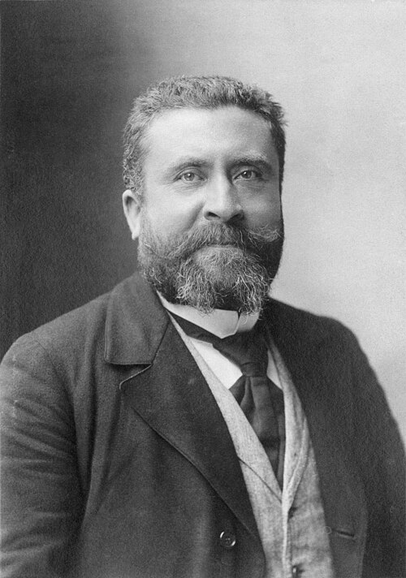
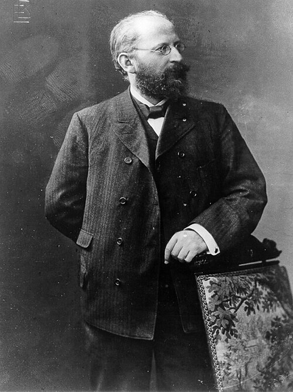
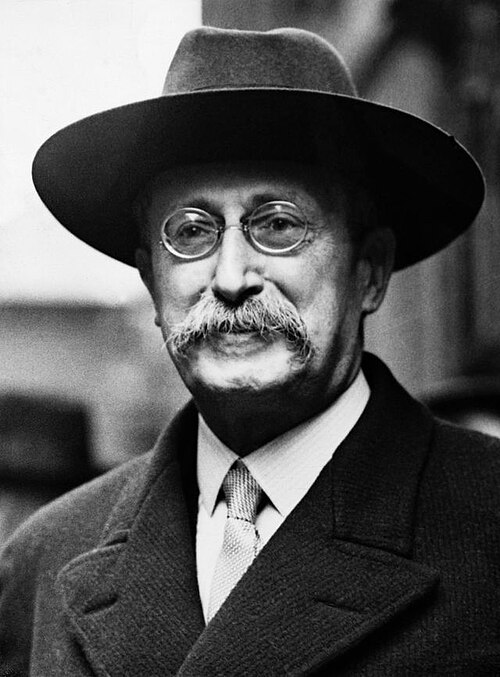

Redistribution
Fiscalité, protection sociale et services publics sont des instruments de réduction des inégalités ; leurs niveaux et leurs modalités font débat.
FAMILLE POLITIQUE
Gauche attachée à la réduction des inégalités, aux services publics, aux droits sociaux et à la redistribution. Elle cherche des changements par des moyens démocratiques et institutionnels. Le degré de régulation du marché, de protectionnisme et d’intervention de l’État varie entre gauche sociale et social-démocratie.
RoseLa solidarité et les traditions du socialisme démocratique. Symbole éditorial, sans valeur d’emblème officiel.
LA QUESTION CENTRALE
Fiscalité, protection sociale et services publics sont des instruments de réduction des inégalités ; leurs niveaux et leurs modalités font débat.
Le changement est recherché dans un cadre pluraliste, par la loi, les élections et le dialogue social, sans que les mobilisations soient exclues.
Libre-échange régulé, construction européenne ou protectionnisme social divisent cette famille : une même position économique ne peut pas être attribuée à tous ses membres.
ORIGINES ET TRANSFORMATIONS
La social-démocratie s’enracine dans le mouvement ouvrier et dans la conquête de droits par la participation démocratique. Au cours du XXe siècle, elle associe selon les pays économie de marché, négociation collective, protection sociale et intervention publique.
Sheri Berman insiste sur la volonté de soumettre les forces économiques à des objectifs politiques et sociaux. Notre catégorie « gauche sociale / sociale-démocrate » est volontairement plus large : elle inclut aussi des sensibilités protectionnistes ou critiques du marché qui ne se reconnaissent pas dans toutes les évolutions de la social-démocratie.
DES INFLUENCES À DISTINGUER
Chez Julliard, les gauches libérale, jacobine, collectiviste et libertaire sont des traditions historiques qui se croisent. Le socialisme démocratique français et la social-démocratie européenne n’en sont pas de simples cases modernes.

Articulation entre République, démocratie, mouvement ouvrier et émancipation sociale ; une référence majeure du socialisme français.
Noir et blanc et cadrage appliqués à l’affichage ; les fichiers sources sont conservés sans modification.

Révision du marxisme et défense d’une transformation par les réformes démocratiques plutôt que par l’attente d’un effondrement du capitalisme.
Noir et blanc et cadrage appliqués à l’affichage ; les fichiers sources sont conservés sans modification.

Réflexion sur l’exercice du pouvoir, la démocratie et la transformation sociale dans la tradition socialiste française.
Noir et blanc et cadrage appliqués à l’affichage ; les fichiers sources sont conservés sans modification.
Les politiques de demande et de stabilisation ont fourni des instruments à de nombreuses gauches de gouvernement. Keynes n’est pas pour autant le fondateur du socialisme ni une propriété exclusive de la gauche.
Noir et blanc et cadrage appliqués à l’affichage ; les fichiers sources sont conservés sans modification.
Articuler la priorité des libertés de base à une réflexion sur la justice sociale. L’extrait du chapitre de Nemo souligne la protection des libertés face aux objectifs de redistribution ; cette lecture ne fait pas de Rawls un auteur propre à un seul parti.
Éclairage complémentaire : Philippe Nemo et les chapitres indiqués ci-dessous.
Noir et blanc et cadrage appliqués à l’affichage ; les fichiers sources sont conservés sans modification.
Ces influences ne conduisent pas à une politique économique unique : réforme du marché, redistribution, nationalisations et négociation collective demeurent des objets de débat.
Comparer socialisme démocratique, social-démocratie et justice libérale : la réforme sociale peut mobiliser plusieurs conceptions de l’égalité et de la liberté. Le classement critique de Nemo doit être croisé avec l’histoire de la social-démocratie étudiée par Sheri Berman.
Philippe Nemo, Histoire des idées politiques aux Temps modernes et contemporains, PUF, « Quadrige », 2013 [2002]. Référence complète et périmètre de consultation.
Ces renvois identifient les chapitres utiles. Les extraits accessibles et le sommaire ont été consultés ; ils ne constituent pas une lecture intégrale de l’ouvrage. Cette perspective est croisée avec les autres références du dossier.
DES IDÉES AUX ORGANISATIONS
4 formations dans notre annuaire non exhaustif. Ce rattachement principal ne résume pas toute la diversité interne d’un parti.
Explorer l’annuaire des partis avec ce filtre →PRÉSIDENTIELLE 2027
Le classement personnel est expliqué dans chaque profil. Il peut différer de celui d’un parti ; une ancienne affiliation ne suffit pas à le déterminer.

Parti socialiste
Maire de Saint-Ouen-sur-Seine depuis 2020, cet élu socialiste annonce sa candidature sur France Inter.
Profil et programme · ébauche →La Convention
Ancien Premier ministre et ministre de l’Intérieur sous François Hollande, il a auparavant été maire de Cherbourg-Octeville.
Profil et programme · ébauche →Place publique
Essayiste et député européen depuis 2019, il est l’une des figures de Place publique.
Profil et programme · ébauche →Debout !
Député de la Somme, journaliste et documentariste, il a rompu avec La France insoumise et préside Debout !.
Profil et programme · ébauche →Cette sélection s’inscrit dans une bibliographie plus large. Les notices précisent ce qui a été consulté et ce que chaque référence apporte ; aucune filiation personnelle n’est déduite d’un seul rapprochement historique.
Méthode et bibliographie complète →